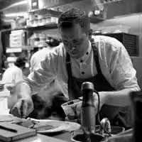

Home · Experiences · N°01
Yunic Dining is private dining without being tied to one cuisine or one format.

A menu may begin with an Indonesian memory, an exceptional ingredient, Nic’s European culinary roots, something discovered while travelling, or simply a conversation about what you would love to eat.
One dinner or a private chef for your whole stay: in your home, your villa, on a yacht or somewhere remote. We learn what you love. Then we cook.
Yuli and Nic bring their different backgrounds together, supported by the Yunic team, to create an experience around the people, the place and the occasion.
Private dinners · Table d’Hôte · Rijsttafel · Ingredient-led dinners · Parties · Events · Seasonal experiences
It doesn’t need a label. It needs to make sense at your table.